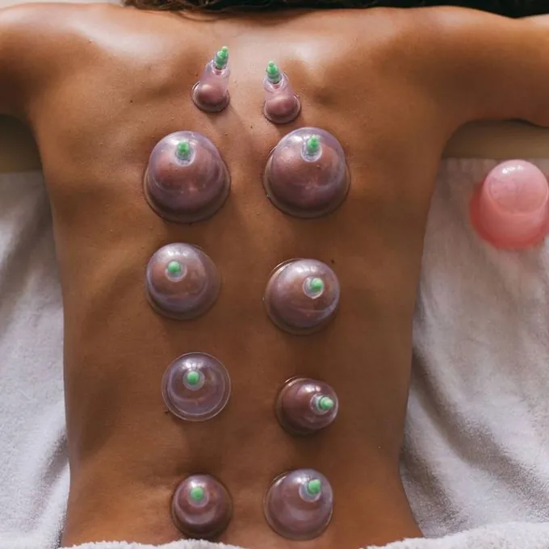
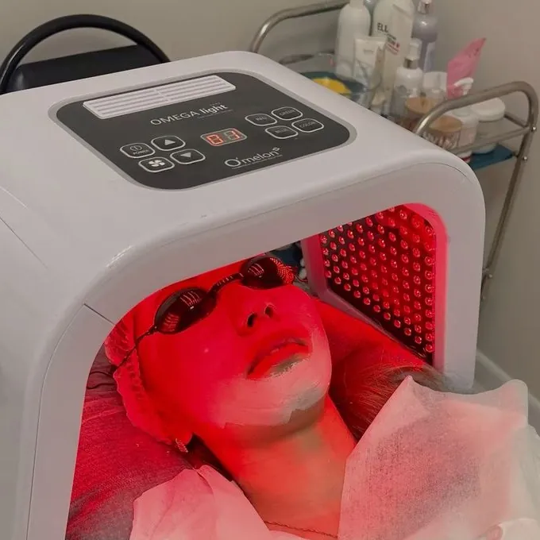
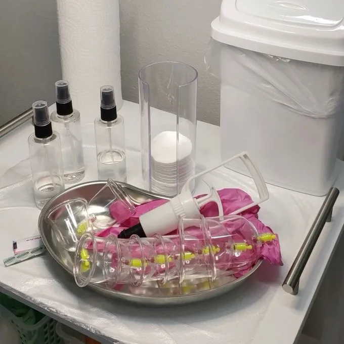
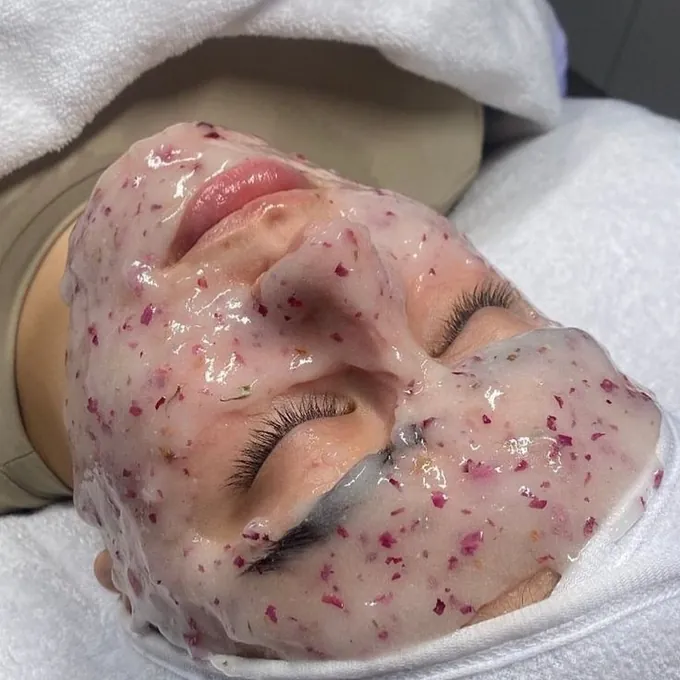

Каждый день 9:00–20:00 · Набережные Челны
Хиджама 
и косметология 
у Фирузы
Чистка и массаж лица, пилинги, аппаратные процедуры, массаж тела и хиджама. 7-й комплекс, 11, каждый день с 9:00 до 20:00, по записи.


Рабочее место и маска для лица. Фото из карточки студии в 2ГИС
О Фирузе
К Фирузе ходят всей семьёй
Фируза работает косметологом, и у неё медицинское образование. По отзывам, к ней ходят годами, с супругом, детьми и пожилыми родителями, и к каждому она находит подход.
- 1РазговорЧто беспокоит, чего хочется и нет ли противопоказаний.
- 2ПроцедураСпокойно и без спешки. В отзывах пишут про качественные средства.
- 3Советы на домКак ухаживать после процедуры и когда прийти снова.
Порядок визита примерный, поправим вашими словами.
Подбор
Что хочется?
Нажмите на часть круга: лицо, тело или хиджама. Потом выберите, что хочется, и сайт подскажет процедуру и что важно знать заранее.
Что хочется
Описания примерные, в готовой версии будут ваши слова.
Процедуры
Процедуры и цены
Нажмите на процедуру, и она сразу окажется в записи.
Лицо5 процедур
Тело2 процедуры
Хиджама1 процедура
Ещё в карточке студии в 2ГИС указаны удаление новообразований и удаление татуировок. Об этих процедурах лучше спросить у Фирузы лично, по телефону +7 906 330-92-02
Названия процедур собраны по карточке 2ГИС и отзывам. Пришлёте прайс, поставлю цены и время.
Отзывы
Все отзывы в 2ГИССамый классный массажист и косметолог Фируза! … от неё возвращаешься отдохнувшей душой и телом и на позитивеЛяйсан, отзыв в 2ГИС
Замечательный профессиональный мастер с медицинским образованием, большим опытом работы Фируза, ходим всей семьёй, уже несколько лет: дети, супруг, пожилые родители. К каждому найдёт подход
Ярина Левашова, 2ГИСогромная благодарность Фирузе за процедуру хиджамы! … Процедура прошла в спокойной атмосфере, всё было аккуратно и профессионально
Руслан Фаизов, 2ГИСХожу к ней на омолаживающие процедуры, очень довольна результатом. Также делаю хиджаму и массаж… внимательные, волшебные руки
Гузелия Хабибрахманова, 2ГИСВаши процедуры помогли мне почувствовать себя увереннее и красивее
Лилия Хазеева, 2ГИСЯ постоянный клиент… Приятная атмосфера и удобная локация, центр города! Процедуры всегда сделаны качественными продуктами!
Natalia Gavrilova, 2ГИСбрала курс массажа всего тела, очень понравилось
Элина, 2ГИС
Онлайн-запись
Запись без переписки
Процедура, день и время. Придёте вместе? Запишите нескольких человек подряд.
Вы записаны!
Откроется бот студии: нажмите «Старт», и накануне придёт напоминание. Здесь это демонстрация.
Напоминания в Telegram включены. Фируза видит ваш ник и может написать вам в Telegram.
Коротко о главном
Вопросы и ответы
Где находится студия Фирузы?
Набережные Челны, 7-й комплекс, 11. В отзывах пишут: «удобная локация, центр города». Как пройти и на какой этаж, Фируза подскажет при записи.
Во сколько работает студия?
Каждый день с 9:00 до 20:00, по предварительной записи.
Какое образование у Фирузы?
Медицинское. Фируза работает косметологом, и у неё медицинское образование.
Что такое хиджама и как она проходит?
Это процедура с вакуумными банками: их ставят на кожу, чаще на спину. Перед процедурой Фируза обсудит с вами противопоказания и расскажет, как всё пройдёт.
Есть ли противопоказания?
Да, у хиджамы, пилингов и аппаратных процедур есть противопоказания. Перед процедурой Фируза спросит о самочувствии и обсудит их с вами; если есть сомнения, лучше заранее проконсультироваться с врачом.
Какие процедуры для лица есть?
Чистка лица, пилинги, массаж лица, аппаратная косметология и омолаживающие процедуры.
Можно прийти всей семьёй?
Да. По отзывам, к Фирузе ходят семьями: с супругом, детьми и пожилыми родителями. На этом сайте можно записать нескольких человек подряд.
Сколько стоят процедуры?
Чистка лица: [цена], массаж всего тела: [цена], хиджама: [цена]. Все цены в прайсе выше.
Как записаться?
Онлайн на этом сайте: выберите процедуру, день и время. Или позвоните: +7 906 330-92-02, напишите в Telegram или WhatsApp.
Как найти
7-й комплекс, 11
- Адрес
- Набережные Челны, 7-й комплекс, 11
[этаж и вход] - Часы
- Каждый день 9:00–20:00
по предварительной записи - Телефон
- +7 906 330-92-02
- Мессенджеры
- Telegram @firuza2506
WhatsApp
Круг показывает сутки: розовая дуга отмечает часы работы, а точка показывает, который час в Челнах
Приятная атмосфера и удобная локация, центр города!Natalia Gavrilova, отзыв в 2ГИС
Что сверим перед запуском
Черновик собран по открытым данным. Вот что здесь придумано или неизвестно: поправим вместе до запуска.
- Цены и длительность каждой процедуры: сейчас на их месте [цена] и [мин].
- Образование: где и на кого вы учились, сколько лет в профессии. Можно фото диплома или сертификатов. Сейчас на сайте только фраза из вашего профиля в Telegram «косметолог с медицинским образованием».
- Этаж, вход и ориентир у дома 7-й комплекс, 11: в 2ГИС их нет.
- Какие процедуры оставить на сайте. Удаление новообразований и татуировок обычно требует медицинской лицензии, поэтому пока они упомянуты одной строкой, без записи.
- Описание хиджамы и процедур написано общими словами (банки, чаще на спину). Как это проходит у вас, с насечками или без и сколько длится, поправим вашими словами. О традиции хиджамы ничего не писали: если хотите, добавим вашими словами.
- Названия процедур собраны из карточки 2ГИС и отзывов («омолаживающие процедуры», «массаж всего тела курсом»): сверим с вашим прайсом.
- Кого принимаете: мужчин, детей (с какого возраста) и пожилых, и на какие процедуры. На сайте про семьи сказано по отзывам.
- Порядок визита (разговор, процедура, советы на дом) и описания в подборе «Что хочется?» примерные.
- Фото: взяты 4 из 11 фото карточки 2ГИС. Свечу у уха (на фото чужой логотип), массаж при свечах, белую маску и 3D-картинку не брали: похожи на чужие. Если какое-то из взятых фото не ваше, заменим. Пришлите фото кабинета.
- На одном фото в 2ГИС процедура с огнём на полотенце: делаете ли её и показывать ли на сайте.
- Запись сейчас демонстрационная: свободное время выдумано, заявки никуда не уходят. В готовом сайте заявки и напоминания пойдут через Telegram-бота студии.